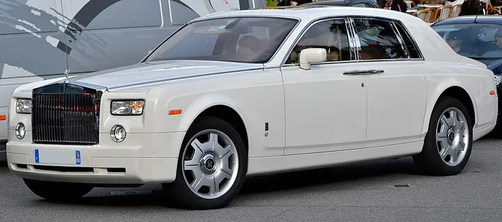

Rolls-Royce Phantom VII
2003–2017
Abstract
The Rolls-Royce Phantom VII is a full-size luxury car (F), built 2003–2017 (Saloon) in United Kingdom: West Sussex, England (Goodwood plant). Body styles: 4-door saloon, 2-door cabriolet, 2-door coupé. Layout: FR Layout. Designed by Marek Djordjevic (exterior: 1999), Charles Coldham (interior).

_(cropped).jpg){kind=link}
1Specifications
| Production | 2003–2017 (Saloon)2007–2016 (Drophead Coupé)2008–2016 (Coupé) |
|---|---|
| Assembly | United Kingdom: West Sussex, England (Goodwood plant) |
| Designer | Marek Djordjevic (exterior: 1999)Charles Coldham (interior) |
| Class | Full-size luxury car (F)Ultra-luxury car |
| Body style | 4-door saloon2-door cabriolet2-door coupé |
| Layout | FR Layout |
| Engine | 6.75 L N73B68 V12 (petrol) |
| Transmission | 6-speed 6HP32 automatic (Series I models)8-speed 8HP70 automatic (Series II models) |
| Wheelbase | 3570 mm (SWB)3820 mm (EWB) |
| Length | 5834–5842 mm (SWB)6084–6092 mm (EWB) |
| Width | 1990 mm (SWB & EWB) |
| Height | 1632–1638 mm (SWB)1634–1640 mm (EWB) |
| Weight | 2550–2560 kg (SWB)2670 kg (EWB) |
| Related | Rolls-Royce Phantom Drophead CoupéRolls-Royce Phantom Coupé |
| Predecessor | Rolls-Royce Silver Seraph |
| Successor | Rolls-Royce Phantom VIII |
2Versions
- Initial release (2003–2012)
- Luxury amenities
- Phantom Extended Wheelbase (2005–2012)
- Phantom Drophead Coupé (2007–2017)
- Armoured Rolls-Royce Phantom (2007–2017)
- Phantom Coupé (2008–2016)
- 2009 model year update (2009–2017) (facelift)
- Rolls-Royce Phantom Series II (2012–2017)
- Phantom Extended Wheelbase (2012–2017)
- Phantom Series II Coupé (2012–2016)
- Phantom Series II Drophead Coupe (2012–2016)
- Series I (2003–2012)
- Centenary Edition (2004)
- Naples Winter Wine Festival car (2005)
- 80th Anniversary Edition (2005)
- Rolls-Royce Phantom Black (2006)
- Rolls-Royce Phantom Silver (2007)
- Rolls-Royce Phantom Tungsten (2007)
- Grey Goose Extended Wheelbase Phantom (2007)
- Pininfarina Hyperion (2008)
- Peony edition (2008)
- Rolls-Royce Phantom Sapphire (2008)
- Yas Eagle edition (2010)
- 60th Anniversary Special Edition Phantom Drophead Coupé (2010)
- 2010 Paris Motor Show Phantom (2010)
- Spirit of Ecstasy Centenary Collection (2011–present)
- Phantom Experimental Electric (102EX) (2011)
- Masterpiece London 2011 Drophead Coupé (2011)
- Year of the Dragon Collection (2011)